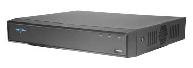

|  |
X-Security XS-XVR6232S-AIEspecificações PrincipaisCanais de Gravação: Suporta até 32 canais de entrada de vídeo, permitindo a conexão de um grande número de câmeras de segurança. Resolução de Gravação: Resolução de Gravação: Oferece gravação em resoluções de até 8MP (4K), garantindo imagens de alta qualidade e detalhamento. Capacidade de Armazenamento: Suporta até 2 discos rígidos SATA com capacidade máxima de 10TB cada, permitindo um armazenamento total de até 20TB. Compressão de Vídeo: Compressão de Vídeo: Utiliza os codecs H.265+ e H.264+, que oferecem maior eficiência de compressão, reduzindo a necessidade de largura de banda e armazenamento. Saídas de Vídeo: Equipado com saídas HDMI e VGA para conexão a monitores, suportando a visualização em alta resolução. Configuração e Operação: Interface de usuário intuitiva com suporte a múltiplos idiomas, facilitando a configuração e operação do dispositivo. Funções de Rede: Suporta visualização e controle remoto através de dispositivos móveis e computadores via software e aplicativos dedicados. Áudio: Inclui suporte para entradas e saídas de áudio, permitindo a gravação e reprodução de áudio juntamente com o vídeo. Backup de Dados: Possui portas USB para backup de dados, atualizações de firmware e exportação de gravações. Quer Comprar ou saber mais informações? Contacte-nos! |